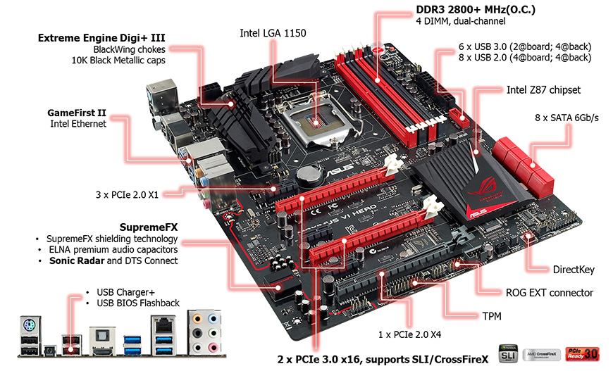

Offre le migliori possibilita di overclocking e funzionalita di tuning competitive, appositamente predisposte per stabilire nuovi record mondiali nelle prestazioni.MAXIMUS VI GENEfornisce i vantaggi dell'eccellenza di ROG nel gaming in un compatto fattore di forma micro-ATX, mentreMAXIMUS VI HEROoffre tutte le caratteristiche necessarie per il gaming di fascia alta con la massima stabilita, a un prezzo particolarmente allettante per gli utenti appassionati di PC 'fai da te' che desiderano trarre vantaggio dalla grande esperienza di ROG.
Tutte e tre queste schede madri offrono agli utenti i vantaggi e la grande esperienza di ASUS e ROG in ricerca e progettazione. Le schede sono state realizzate usando la circuiteria e gli schemi piu raffinati e vengono fornite con il BIOS ROG UEFI, che consente di apportare con facilita profonde modifiche alle impostazioni del PC. Come sempre, ASUS con la serie ROG si e spinta ben oltre le consuetudini di mercato per offrire di più ai clienti. Nel BIOS ROG UEFI è stata inclusa la tecnologia SSD Secure Erase, per garantire la rimozione senza problemi dei dati e il ripristino delle prestazioni SSD dall'interno del BIOS, senza alcuna necessita di usare software di terze parti e minimizzando i problemi di compatibilita. In queste schede sono stati utilizzati i componenti più avanzati al fine di garantire una migliore stabilità, come dimostra la ultra-precisa architettura di alimentazione Extreme Engine Digi+ III completamente digitale per CPU e memoria, alla quale si aggiungono i choke rinforzati BlackWing da 60 A, condensatori Black Metallic 10K e MOSFET NexFET con efficienza del 90%. Questi componenti permettono di gestire con facilità il gaming più gravoso e l'overclocking estremo.
comuni comprendono l'uso di DRAM in topologia T di seconda generazione per consentire maggiori frequenze della memoria anche in corrispondenza dei carichi massimi, e l'esclusiva tecnologia 4-Way Optimization a singolo click, utilizzata anche nelle schede madri Z87 di ASUS. Le tre schede adottano la tecnologia RAMDisk, che trasforma fino all'80% della RAM di sistema in uno spazio di archiviazione super-veloce a più di 10.000 MB/s: una velocità che supera di 20 volte quella degli SSD SATA. ROG ha sviluppatoMAXIMUS VI EXTREMEper migliorare ulteriormente la consolidata leadership dei suoi predecessori con lo stesso nome e si è già dimostrata in grado di supportare velocità della CPU superiori a 7 GHz e frequenze della memoria superiori ai 4 GHz. La scheda offre un'ampia connettività, mentre la disposizione intelligente dei 16 slot PCI-Express si traduce nel facile uso delle tecnologie a 4 vie NVIDIA® SLI™ o AMD CrossFireX™.
